写给完全零基础的你 · 2026 年 11 月更新
加密货币也能交易美股？
现在用 USDT、USDC 就能在一些加密平台买到跟美股挂钩的产品：有的是真股票账户，有的是代币化股票，有的只是合约。它们差别很大。这里用大白话讲清楚有哪几种、哪些平台有、怎么一步步操作、风险在哪，顺便把注册、买 U、转账、钱包这些基础一次学会。
只讲产品和操作，不推荐任何股票或币，不承诺收益。
先记住 3 条铁律
- 助记词、私钥、验证码，谁要都不给。包括自称客服、警察、老师、对象的人。
- 第一次做任何操作，先用小额试一笔。注册、转账、买股票、用钱包都一样。
- 只用亏光也不影响生活的闲钱，不碰杠杆合约。不信“稳赚”“保本”“带单”。
邀请码速查
多数平台的邀请码只能在注册那一步填。点“复制”后粘贴到注册页的邀请码栏；点“打开”进入站长提供的注册链接。每个链接的域名我们都核对过，结果写在链接安全说明里，交易所另外提供了官方主站入口。
这些都是站长的邀请码，通过它们注册，站长可能获得平台返佣，你不会因此多付费用。返现比例和可用地区以平台官方页面为准。
学习路线
想直接了解美股的，从“美股专区”开始；完全没接触过加密货币的，建议先补“入门基础”里的风险、防骗和转账。
这个网站怎么用
📚 按顺序看
电脑在左侧目录，手机点左上角 ☰ 打开目录，每课底部都有“下一课”。
✅ 进度自动记住
看过的课会打勾，记录只保存在你自己的浏览器里，不上传。
🔎 查生词
“基础概念”里有 60+ 个可搜索术语，包括美股和合约相关的词。
本站只做操作教程和风险科普，不构成任何投资建议，不推荐任何币种或股票，不承诺任何收益。加密资产和股票价格都会大幅波动，杠杆产品可能让你亏光本金。请先了解并遵守你所在地区的法律法规，中国大陆的规定见风险与法规。
用加密货币接触美股：4 种方式，权利完全不同
同样叫“买美股”，在加密平台上可能是买了真股票，也可能只是买了一个跟着股价走的代币，甚至只是一份对赌涨跌的合约。先分清楚这 4 种，再谈平台和操作。
- 真股票账户最接近传统券商：股票由合作券商托管，有分红，部分平台说明有或计划提供投票权。
- 代币化股票由发行方持有真股票、再发 1:1 的代币。你拿的是代币，通常没有投票权。
- 股票永续合约、CFD都不持有股票，只跟踪价格、可加杠杆，会爆仓，新手不建议碰。
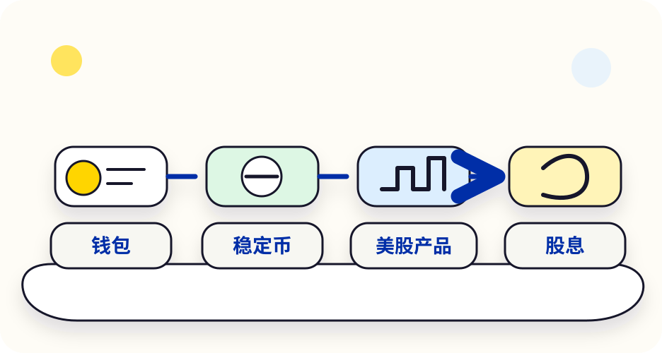
先用一句话分清
“交易所里开了个美股户”
你用 USDC 入金，平台换成美元，通过合作券商帮你买真实股票。比如 Bybit 说明其美股由美国券商 Alpaca 执行和托管。
“股票的链上凭证”
发行方买入真股票放在托管机构，再在区块链上发等量代币。比如币安的 bStocks（BNB Chain）、Backed 的 xStocks。
“只赌涨跌的合约”
用 USDT 做保证金，跟着股价算盈亏，可以做多做空、加杠杆、24 小时交易。没有股票、没有股东权利。
“和平台对赌的差价”
多在 MT5 软件里交易，通常杠杆很高。比如 Bybit TradFi 的股票 CFD 由其毛里求斯持牌实体提供。
权利对比：这张表最重要
| ① 真股票账户 | ② 代币化股票 | ③ 股票永续合约 | ④ CFD | |
|---|---|---|---|---|
| 你持有什么 | 真实股票（由券商托管，记在平台的账户结构下） | 发行方发的代币，代表对底层股票的经济权益 | 一份合约，没有股票 | 一份合约，没有股票 |
| 投票权 | 看平台：Bitget 写“按实际持股和产品规则”；Bybit 写“计划推出” | 通常没有 | 没有 | 没有 |
| 分红 | 有。Bybit 把现金分红换成 USDC 发到账户 | 看产品规则。bStocks 有按快照发放或再投资的记录 | 不发分红 | 按平台规则做价格调整 |
| 交易时间 | 跟美股时段，部分含盘前盘后（如 Bitget 写 24/5） | 多数 7×24；美股休市时价格可能偏离正股 | 7×24 | 看品种 |
| 杠杆 / 爆仓 | 无杠杆，不会爆仓 | 现货无杠杆，不会爆仓 | 有杠杆，会爆仓 | 高杠杆，会爆仓 |
| 能否提到钱包 | 不能 | 可以（bStocks、xStocks 都支持提到自托管钱包） | 不能 | 不能 |
| 托管与保护 | 合作券商托管。Alpaca 是 FINRA/SIPC 会员，但你通过交易所间接持有，保护能否覆盖到你个人要看条款 | 依赖发行方和托管机构足额持股 | 依赖平台本身 | 依赖平台本身 |
| 新手适合度 | 相对适合，小额了解 | 可以小额了解，先读规则 | 不建议 | 不建议 |
表格基于各平台 2026 年公开说明整理，规则可能调整，以 App 内产品说明为准。
和在正规券商开户比，差在哪？
- 所有权：在美国券商开户，股票登记在你的账户下；在交易所买，大多是平台的账户结构替你持有，或者你只持有代币或合约。
- 投资者保护：传统券商受当地证券法规约束。加密平台的美股产品多由离岸实体提供（比如 Bybit 写明受毛里求斯金融服务委员会监管），出问题时维权更难。
- 出入金：交易所用 USDT/USDC 出入金，方便，但也意味着要承受稳定币和平台风险。
- 交易时间：代币和合约 7×24 交易，周末和节假日美股不开盘，这时的价格来自平台自己的报价或指数，周一开盘可能跳空。
- 税务：多数地区买卖股票和加密资产的收益都需要申报，用加密平台交易不代表不用报税。
适合我吗？三个问题自测
银发〔2026〕42 号通知写明：任何单位和个人投资虚拟货币、现实世界资产代币（RWA）及相关金融产品，违背公序良俗的，相关民事法律行为无效，损失自担；境外机构不得向境内主体提供虚拟货币相关服务。代币化股票就属于 RWA 范畴。另外，多家平台的美股相关产品明确不对中国大陆用户开放，比如 Datawallet 整理的 Bybit TradFi 受限地区就包括中国大陆和香港。详见风险与法规。
平台对比：币安、OKX、Bitget、Bybit 各有什么
下表只写我们查到公开来源的内容（截至 2026 年 11 月）。“未查到”不代表没有，只代表我们没找到可靠出处。可交易品种和地区随时会变，以 App 为准。
| 平台 | ① 真股票账户 | ② 代币化股票 | ③ 股票永续合约 | 其他 | 邀请码 |
|---|---|---|---|---|---|
| 币安 | Binance Stocks：媒体报道面向合格的非美国用户，7,000+ 只美股和 ETF，零佣金。合作券商和托管细节我们未查到 | bStocks（2026-06 推出，BNB Chain，受监管托管机构 1:1 持股，可提到币安钱包；2026-10 起扩展到阿联酋、巴林） | TradFi 永续：2026-01 起陆续上线特斯拉、英伟达、Meta、谷歌等；另有港股、韩股合约（见下文） | — | BTC10888 |
| OKX | 未查到 | xStocks（2026-07 上线 40+ 只美股和 ETF，1:1 由真股票支持，对 USDT 7×24 交易） | 2026-02 起上线 17 只美股和 ETF 永续，之后扩展到指数（US500、US100）等 | OKX 钱包也能接触链上代币化股票 | 3604739 |
| Bitget | Stock+：官方文章写 10,000+ 只美股和 ETF，USDC 入金换美元，可买零碎股，24/5 含盘前盘后；合作券商未在文中说明 | rToken（Stocks 2.0），官方说明“经济敞口，不是直接登记持股，通常无投票权” | AAPL、TSLA、NVDA 等 USDT 本位股票合约 | — | 0LJJYSJ8 |
| Bybit | Bybit Stocks（2026-10-12）：1,000+ 只美股和 ETF，由 Alpaca（FINRA/SIPC 会员）执行、清算和托管，USDC 入金，现金分红以 USDC 发放，投票权计划推出 | xStocks（2025 年起在现货上线） | TradFi 永续：200+ 股票、ETF、商品；含韩股合约 | MT5 股票 CFD（毛里求斯持牌实体） | M881VM |
其他平台：Kraken 有 xStocks 和代币化股票永续；Gate、MEXC 等也上线了代币化股票；Hyperliquid、Lighter、Aster 等链上交易所有股票永续合约。我们没有逐一核对，仅作提示。
怎么选？按你的目的
想长期持有、要分红
优先了解真股票账户（Bybit Stocks、Bitget Stock+ 等），看清托管券商、费用和地区。
想用 USDT 小额体验、周末也能交易
可以了解代币化股票（bStocks、xStocks），注意休市时价格可能偏离正股。
想加杠杆赚快钱
这正是新手亏得最快的方式。请先读完股票合约与爆仓，我们不建议新手做。
能买港股、韩股、日股吗？
我们查到的情况（截至 2026 年 11 月），只写有出处的：
| 市场 | 查到了什么 | 是什么形式 |
|---|---|---|
| 港股 | 币安 2026-07-17 上线腾讯、小米（Quanto 合约，港币股价直接按 USDT 计）、MiniMax、智谱等永续合约；链上交易所 Aster 也上线了腾讯、小米等合约 | 永续合约 |
| 韩股 | 币安 2026-06-02 起上线三星电子、SK 海力士、现代汽车永续合约，6 月底杠杆上调到最高 50 倍；Bybit 2026-06-04 跟进；链上交易所 Lighter 也有 | 永续合约 |
| 日股 | OKX 2026-11-04 公告上线名为 MURATA 的 TradFi 永续，公告没写明标的细节 | 永续合约 |
我们没有查到四大交易所提供港股、韩股的真股票账户或代币化现货。目前能查到的都是合约：不持有股票、可加高杠杆、会爆仓。韩国媒体报道，2026 年 2–8 月离岸交易所韩股合约累计成交高达 307 万亿韩元，当地也在讨论这类产品难以监管、投资者保护不足。
实操：从注册到买入第一笔美股相关产品
下面分两条路：A 是交易所里的真股票账户，B 是代币化股票。各家 App 的按钮名字会不同、经常改版，这里写的是通用流程，以你 App 里看到的为准。
开始前：三样准备
- 一个完成 KYC 的交易所账户。还没有的看选交易所与注册，邀请码在下面。
- 确认地区可用。在 App 里搜索“股票 / Stocks / TradFi”，能看到入口、条款也没写你所在地区受限，才继续。
- 准备少量稳定币。真股票账户多用 USDC（Bybit、Bitget 都写的是 USDC），代币化股票多用 USDT 交易。不会买 U 的看第一次买 U。
路线 A：交易所里的真股票账户
以 Bybit Stocks、Bitget Stock+ 这类产品为例：
- 找到入口：App 首页或“交易”菜单里的“股票 / Stocks / Stock+”。
- 开通：阅读并同意券商服务协议和风险披露，这一步会说明谁托管你的股票，务必看。
- 入金：把 USDC 划转到股票账户，平台会换成美元，留意兑换费。
- 找股票：按代码搜索，比如苹果是 AAPL、英伟达是 NVDA。确认交易所名称和公司名一致。
- 下单：新手用“限价单”更可控。可以买零碎股，比如 0.01 股，先小额体验。
- 看持仓和分红：持仓页能看到成本和盈亏；分红一般按平台规则发到账户（Bybit 说明以 USDC 发放）。
- 卖出和出金：卖出后美元换回 USDC，再划回交易账户。美股有交收时间，资金不一定马上可提。
路线 B：代币化股票（bStocks、xStocks）
- 读产品说明：对应哪只股票、谁发行、谁托管、有没有储备证明、分红怎么发、休市时怎么定价。
- 找交易对：在现货市场搜索股票名。bStocks 名字一般以 B 结尾（比如 NVDAB），xStocks 一般带 x；不同平台显示略有不同。
- 小额买入：和买币一样，用市价单或限价单。休市时段价差可能变大，尽量在美股开盘时间交易。
- 可选：提到自己的钱包。bStocks 在 BNB Chain 上，提币要选对网络、钱包里要有少量 BNB 付手续费；先读Web3 钱包，并先小额测试。
- 卖出：在平台卖成 USDT。提到钱包的代币要先转回平台，或在链上兑换。
- 默认打开的是“合约”或“杠杆”页面，或者让你选 5x、10x 倍数，那不是买股票。
- 有人私下推荐“稳赚的美股代币”“内部渠道的港股、韩股”，或者让你去一个陌生网址买。
- 链上出现一个和 bStocks、xStocks 同名、但合约地址对不上官方的代币。
股票合约：为什么新手最容易在这里亏光
交易所里最显眼、宣传最多的往往是股票永续合约。它看起来像“24 小时交易美股”，其实是带杠杆的价格合约，规则和股票完全不同。
- 合约没有股票、没有分红、没有投票权，只是跟着价格算盈亏。
- 10 倍杠杆，股价反向走 10% 左右就可能爆仓；个股财报日单天涨跌 10% 并不少见。
- 周末和节假日美股休市，合约照样交易，价格靠平台的指数或报价，开盘可能跳空。
一个例子算清楚
你有 100 USDT，开 10 倍杠杆做多某只股票的合约，相当于持有 1,000 USDT 的仓位。
- 股价涨 5% → 你赚约 50 USDT（本金的 50%）。
- 股价跌 5% → 你亏约 50 USDT（本金的一半）。
- 股价跌约 10% → 保证金基本亏光，仓位被强制平仓（爆仓）。实际爆仓线通常比 10% 更近，因为要扣维持保证金和手续费。
如果你开的是“股票杠杆 ETF”的合约（比如 2 倍、3 倍杠杆 ETF），再叠加合约杠杆，波动会进一步放大。
合约的 5 个隐藏成本和风险
资金费率
多空双方每隔几个小时互相付钱，用来让合约价格贴近标的价格。比如 OKX 公告的股票合约每 8 小时结算一次。持仓越久，可能付得越多。
休市定价
美股、港股、韩股都有休市时间，合约却 7×24 交易。休市时价格由平台的指数或报价决定，和真实开盘价可能差很多。
跳空爆仓
财报、新闻在休市时发布，开盘直接跳过你的止损价，可能来不及止损就被强平。
杠杆诱惑
平台常提供 20 倍、50 倍甚至更高的杠杆。韩国媒体报道过“韩股合约 + 3 倍 ETF”叠加后相当于 150 倍的情况。
监管空白
这些合约多由离岸平台提供，当地监管机构很难直接监管，出现纠纷时投资者保护有限。
不是股票
合约到底只是合约：没有分红、没有股东身份，平台下架时你只能平仓结算。
新手不要做股票合约、CFD，也不要用杠杆。真要了解，最多先用平台的模拟盘看看规则。想持有股票，选真股票账户或不加杠杆的代币化股票。
美股常见问题
用加密平台接触美股时，大家问得最多的问题。
用 USDT 买的“美股”，是不是就等于我持有了股票？
不一定。只有交易所里的真股票账户才是买真实股票（由券商托管）。代币化股票是发行方持股、你持有代币，通常没有投票权；股票合约和 CFD 完全不持有股票。下单前看清产品名称和说明。
代币化股票有分红吗？
看产品规则。比如币安 bStocks 有按快照日发放分红或把分红再投资成更多代币的记录。合约不发分红。
为什么周末还能交易？价格准吗？
代币和合约在链上或平台内 7×24 交易，但美股周末不开盘，这时的价格是平台根据指数或做市报价给出的，可能和周一开盘价差很多。
能买港股、韩股吗？
截至 2026 年 11 月，我们查到的都是港股、韩股的永续合约（币安、Bybit 等），没有查到四大交易所提供港股、韩股的真股票或代币化现货。详见平台对比 · 港股韩股。
平台倒闭了，我的股票还在吗？
真股票账户的股票由合作券商托管，理论上和平台资产隔离，但你是通过平台的账户结构间接持有，能否顺利取回要看具体条款和法律管辖。代币化股票依赖发行方和托管机构足额持股。合约则完全依赖平台。
需要多少钱才能开始？
很多产品支持零碎股或小额代币，几美元就能买。本站建议第一次只用很小的金额体验完整流程。
美国人能用吗？中国大陆呢？
代币化股票普遍不对美国人开放。多家平台的相关产品也不对中国大陆、香港等地区开放；中国大陆的监管规定见风险与法规。以 App 内显示和条款为准。
赚了钱要交税吗？
多数地区股票和加密资产的收益都需要申报纳税，规则因地而异，请咨询当地税务专业人士。
这是投资建议吗？
不是。本站不推荐任何股票、币种或平台，只解释产品形态、操作步骤和风险。
先认清风险：这些不懂，别急着入场
很多人进币圈亏钱，不是因为不会买，而是没想清楚自己会面对什么。这一课把常见风险一次讲透。
- 币价可能一年跌 70% 以上，交易所可能倒闭，稳定币也可能短暂“脱锚”。
- 链上转账不可撤回，转错基本找不回。
- 中国大陆明确禁止虚拟货币相关业务，参与交易不受法律保护、损失自担。
1. 价格风险：涨得快，跌得更狠
加密货币没有公司利润、没有政府信用兜底，价格完全由买卖双方决定。比特币作为“最稳”的币，历史上也多次从高点下跌 70% 以上，比如 2021 年 11 月的高点到 2022 年底。小币种跌 90%、直接归零更是常见。
大白话：你投进去的每一分钱，都要做好“可能只剩两三成，甚至全没了”的准备。
2. 平台风险：交易所也会倒
你放在交易所里的币，其实是平台替你保管的。平台挪用、被黑、被查，你都可能取不出来。
| 事件 | 发生了什么 | 给新手的教训 |
|---|---|---|
| FTX 破产（2022 年 11 月） | 当时全球前几大的交易所，挪用客户资产，短短几天停止提币并申请破产，用户资产被冻结多年。 | “大平台”也不等于绝对安全，长期不用的大额资产不要都放在一个平台。 |
| Bybit 被盗（2025 年 2 月） | 约 15 亿美元的 ETH 被盗，美国 FBI 公开指认是朝鲜黑客组织所为。Bybit 表示用自有资金补足，用户提币正常。 | 安全事件随时可能发生，要关注平台公告，分散存放。 |
| OKX 在美国认罪（2025 年 2 月） | OKX 关联公司承认在美国无牌经营汇款业务，支付约 5.05 亿美元罚没款。 | 平台合规状况会影响各地区是否能用，注册前看清地区规则。 |
3. 稳定币风险：“1 块钱”也会变 0.88
USDT、USDC 这类稳定币的目标是 1 个币 ≈ 1 美元，但目标不等于保证：
- USDC 2023 年 3 月：发行方 Circle 有 33 亿美元储备存在倒闭的硅谷银行，USDC 一度跌到约 0.88 美元，几天后才恢复。
- UST 2022 年 5 月：一种靠算法维持的“稳定币”彻底崩盘，几天内跌到接近 0，几百亿美元市值蒸发。
所以稳定币不是银行存款，没有存款保险。
4. 操作风险：转错了，没有“撤回”
银行转错账还能找银行；链上转账一旦发出，没人能撤回。选错链、填错地址、漏填 Memo，都可能永久丢失。充值、提币与转账一课会教你怎么避免。
5. 杠杆合约：新手亏光最快的路
合约可以开 10 倍、50 倍甚至 100 倍杠杆。10 倍杠杆下，价格反向走 10% 左右你的保证金就可能全没（爆仓）。很多“老师带单”“回本神器”最后都指向合约。本站建议新手只接触现货，不碰合约。
6. 法律风险：先看你所在地的规定
2021 年 9 月，中国人民银行等十部门发布《关于进一步防范和处置虚拟货币交易炒作风险的通知》。2026 年 2 月 6 日，中国人民银行等八部门又发布《关于进一步防范和处置虚拟货币等相关风险的通知》（银发〔2026〕42 号）。新通知的要点：
- 比特币、以太币、泰达币（USDT）等虚拟货币不具有与法定货币等同的法律地位。
- 在境内开展法币与虚拟货币兑换、虚拟货币之间兑换、为交易提供信息中介和定价服务等业务，属于非法金融活动，一律严格禁止。
- 境外单位和个人不得以任何形式非法向境内主体提供虚拟货币相关服务。
- 任何单位和个人投资虚拟货币、现实世界资产代币（RWA）及相关金融产品，违背公序良俗的，相关民事法律行为无效，由此引发的损失由其自行承担。
也就是说：在中国大陆参与虚拟货币交易，出了问题基本得不到法律保护；把银行卡借给别人收款、帮人“跑分”还可能触犯刑法。请你自行判断并遵守当地法律。
其他国家和地区的规则差异很大：有的要求交易所持牌、有的限制特定产品（如代币化股票不对美国用户开放）、多数地方买卖盈利需要报税。注册前看清平台的“受限地区”说明。
动手前自测：你适合开始吗？
有任何一条做不到，建议先停在“学习”阶段，不急着入金。
防骗与账户安全：先把门锁好
币圈骗局的套路其实就那么几种。认识它们、把账户安全设置做完，你就已经超过大多数新手。
- “主动找你的客服”“带你赚钱的网友”“领空投的链接”，99% 是骗局。
- 开好 2FA（验证器 App）、反钓鱼码、提现白名单这三样。
- 被骗后第一时间止损、报警；“黑客帮你追回”是第二次诈骗。
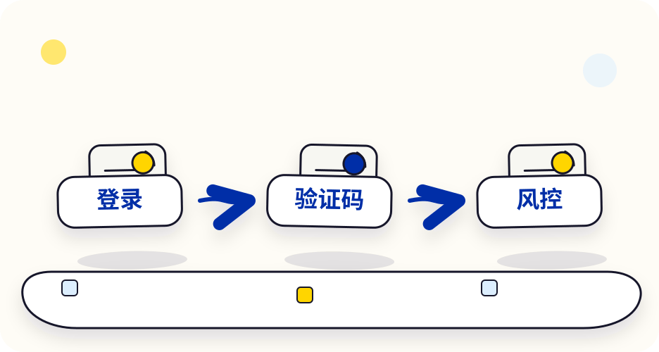
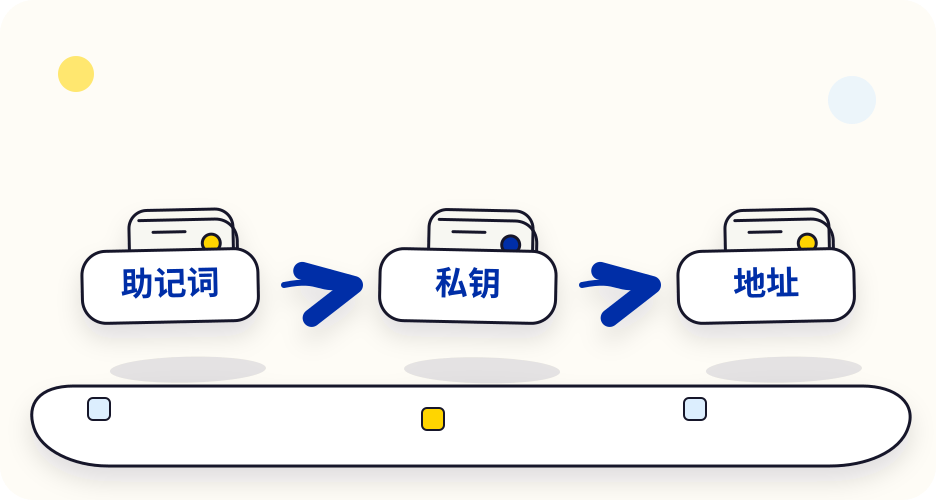
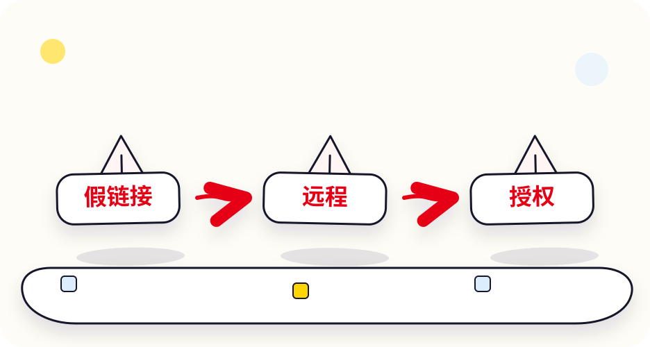
10 种最常见的骗局
杀猪盘（交友投资）最常见、损失最大
套路：在社交软件、婚恋网站认识一个“成功人士”，聊几周建立感情后，说自己有内部渠道，带你在某个 App 或网址“投资”。前几次能小额提现，等你加大投入就再也提不出来，还要你交“税费”“保证金”。
识别：网上认识、没见过面的人谈投资 = 骗局。要你下载陌生 App、打开不是知名交易所的网址 = 骗局。
假客服冒充平台、银行、警察
套路：“您的账户存在异常 / 涉嫌洗钱 / 资金被冻结”，要你加 Telegram、WhatsApp，然后索要验证码、助记词，或让你把币转到“安全账户”。
识别：官方客服不会主动私信你，更不会要助记词、私钥、验证码，也没有“安全账户”。遇到就自己打开官方 App 找在线客服核实。
喊单群 / 带单老师 / 内幕币拉盘砸盘，你接最后一棒
套路：免费拉你进群，“老师”天天晒收益，推荐某个“马上要涨 10 倍”的小币或合约点位。群里的“学员”大多是托。
识别：真有稳赚的方法，没人会免费教陌生人。群里推荐的小币往往是庄家要出货的。
高收益理财 / 资金盘日息 1%、拉人头返利
套路：“存 U 每天 1% 收益”“拉一个人返 10%”。早期确实能拿到钱，因为发的是后来者的本金，直到某天平台关闭。
识别：年化收益远高于常识（比如年化 50%+）、靠拉人头发奖励，基本就是庞氏骗局。
假空投 / 钓鱼网站点链接 → 连钱包 → 签名 → 币没了
套路：推特、电报、邮件、搜索广告里出现“领取空投”“官方活动”链接，网址和官网只差一两个字母。连接钱包后让你签名或授权，币被一次转空。
识别：只通过自己收藏的官网书签进入；看不懂的签名不签；别点搜索结果里的广告链接。
地址投毒转账记录里藏着假地址
套路：骗子生成一个和你常用地址“开头几位、结尾几位”都一样的假地址，给你转 0 元或一点点币，让它出现在你的转账记录里。你下次偷懒从记录里复制，就复制到了骗子的地址。
识别：永远从收款方那里重新复制地址，或用钱包“地址簿”里保存过的地址；核对时除了首尾，中间也要看几位；记录里出现莫名其妙的 0 元转账，就是投毒信号。
远程控制 / 屏幕共享“我一步步教你操作”
套路：让你安装远程协助软件或开会议共享屏幕，“手把手教你提币”，实际上直接看到你的验证码、操作你的账户。
识别：任何人让你装远程软件、共享屏幕处理资金，立刻挂断。
假 App和官方一模一样的图标
套路：通过陌生链接、搜索广告下载的“交易所 App”，界面和真的一样，你输入的账号密码、充进去的币都给了骗子。
识别：只从官网或官方应用商店下载，安装前核对开发者名称；苹果手机注意不要随便安装“企业证书”“描述文件”。
出借银行卡 / “跑分”兼职不是骗你钱，是让你背锅
套路：“用你的银行卡帮我收款，收到后买 U 转给我，每笔给你提成”。这些钱大多是诈骗赃款。
后果：银行卡被冻结，在中国大陆还可能涉嫌帮助信息网络犯罪活动罪、掩饰隐瞒犯罪所得罪。不管给多少钱，坚决不做。
“黑客追回资金”被骗之后的第二刀
套路：被骗后在网上求助，马上有人自称“技术团队”“律师”能帮你追回，先收一笔“服务费”。
识别：链上资产一旦被转走，私人几乎不可能追回。收费追款的基本都是二次诈骗。
账户安全设置清单（注册后马上做）
下面每项打勾后会记在你的浏览器里，方便下次回来对照。
万一被骗或被盗，马上这样做
- 停止一切转账。不要再按对方要求“交解冻费”“交税”。
- 保住剩下的资产：改交易所密码、重置 2FA；钱包被盗就立刻新建钱包，把剩余资产转过去，并撤销可疑授权。
- 保留证据：聊天记录、转账记录、对方地址、TxID、网址，全部截图保存。
- 联系官方：通过官方 App 联系交易所客服，说明情况，看能否冻结相关账户。
- 报警：在中国大陆可拨打 110，或全国反诈预警劝阻专线 96110 咨询；其他地区联系当地警方。
- 警惕二次诈骗：任何声称能“追回资金”并先收费的人，都是骗子。
基础概念：把这些词看懂，再去操作
不用懂技术，只要能分清“币、稳定币、交易所、钱包、链、地址”这几样东西，后面的操作就都看得懂了。
- BTC、ETH 价格会大幅波动；USDT、USDC 是目标锚定美元的稳定币。
- 交易所 = 平台替你保管；钱包 = 自己保管。
- 同一个币可以在不同的“链”上，转账时收发两边必须选同一条链。
区块链：一本大家一起记的账本
想象一个村子不用银行，所有人都拿着同一本账本：张三转给李四 10 块，全村人一起核对、一起记上。想偷偷改一笔账，就得同时改掉大多数人手里的账本，几乎不可能。
区块链就是这样的“公共账本”，只不过记账的是全世界成千上万台电脑。加密货币就是记在这本账上的数字资产。
四个最常见的币
BTC · 比特币
2009 年诞生的第一个加密货币，总量上限 2100 万枚。很多人把它当“数字黄金”，但它的价格涨跌幅度远大于黄金。
ETH · 以太币
以太坊网络的“燃料”。以太坊像一台全球共享的电脑，能运行各种应用；在上面转账、使用应用都要用 ETH 付手续费。
USDT · 泰达币
Tether 公司发行，目标 1 USDT ≈ 1 美元。中文圈说的“U”“买 U”基本就是它，是交易所里最常用的计价币。
USDC
Circle 公司发行，目标 1 USDC ≈ 1 美元，定期公布由会计师事务所出具的储备鉴证报告。在部分合规平台和支付场景更常见。
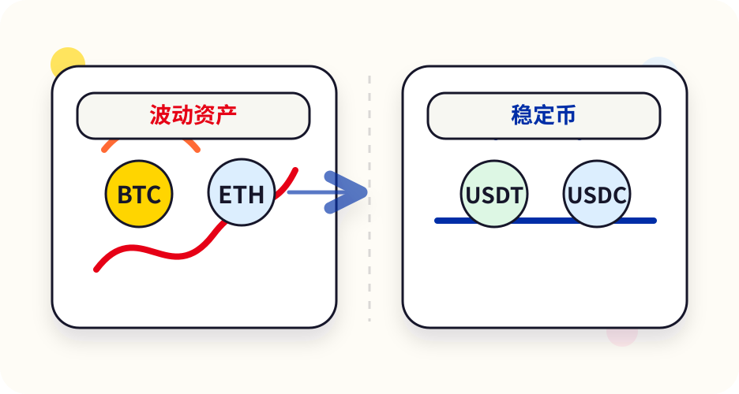
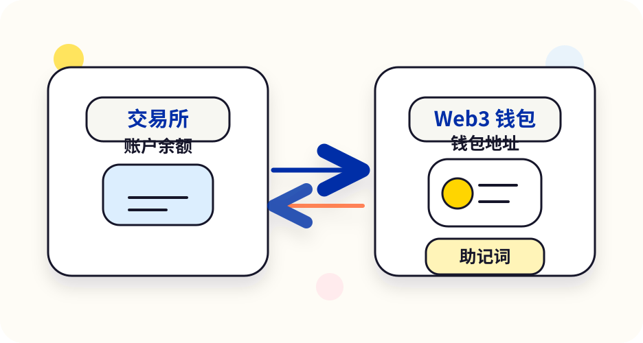
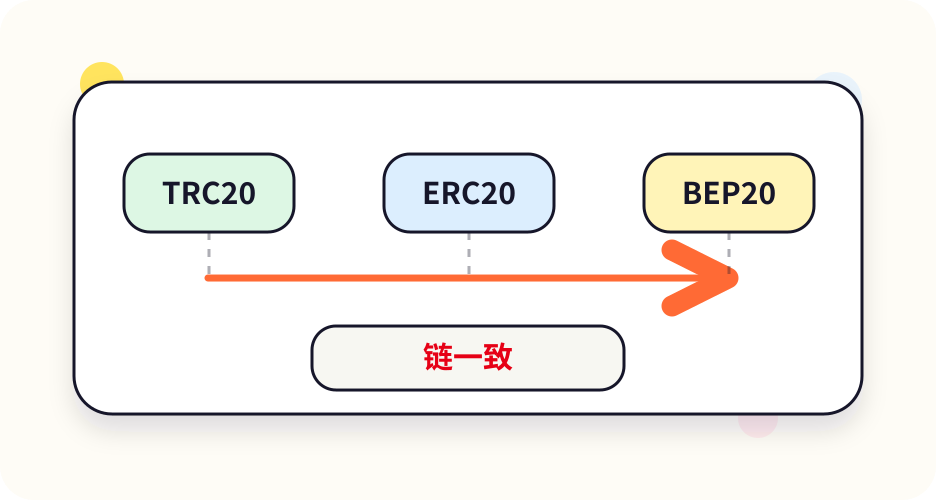
USDT 和 USDC 怎么选？
| 对比 | USDT | USDC | 新手怎么理解 |
|---|---|---|---|
| 发行方 | Tether | Circle | 发行方不同，储备、披露和合规情况不同。 |
| 锚定目标 | ≈ 1 美元 | ≈ 1 美元 | “目标”不等于保证，都发生过短暂偏离。 |
| 常见场景 | 交易所交易、P2P 买卖最常用 | 合规平台、支付、部分 DeFi | 先看你用的平台支持哪个、手续费多少。 |
| 主要风险 | 发行方风险、储备风险、监管风险、平台和链的风险 | 不说哪个一定更好，都不是银行存款。 | |
交易所 vs 钱包：谁替你拿着钥匙？
| 交易所账户（托管） | Web3 钱包（自托管） | |
|---|---|---|
| 像什么 | 银行账户 / 证券账户 | 你自己的保险箱 |
| 谁保管资产 | 平台 | 你自己（助记词 / 私钥） |
| 忘记密码 | 可以找客服重置 | 丢了助记词，谁也帮不了你 |
| 主要风险 | 平台倒闭、被盗、冻结账户 | 助记词泄露、签错授权、转错地址 |
| 适合 | 买卖、出入金、新手起步 | 使用链上应用、长期自己保管 |
圈内有句话：“Not your keys, not your coins”——钥匙不在你手上，币就不完全是你的。但自己保管也意味着出错没人兜底。新手建议：先在交易所熟悉流程，再小额练习钱包。
链、地址、手续费
- 链（网络）：不同的区块链，比如 Ethereum（以太坊）、TRON（波场）、BNB Chain、Solana。同一个 USDT 可以在好几条链上存在，就像同一种快递可以走顺丰也可以走邮政，但收件方必须在对应的网点取件。
- 地址：链上的收款账号，一长串字母和数字，比如以太坊地址以
0x开头，TRON 地址以T开头。 - Gas（手续费）：在链上做任何操作，都要用这条链的“原生币”付手续费：以太坊用 ETH，BNB Chain 用 BNB，TRON 用 TRX，Solana 用 SOL。
- Memo / Tag：部分币充值到交易所时要额外填的“备注号”，转账一课详细讲。
现货、合约、理财，有什么不同？
现货
真的买入这个币。涨了你赚，跌了你亏，最多亏光本金。
合约 / 杠杆
借钱放大仓位，赚亏都被放大，价格反向波动一点就可能爆仓清零。
理财 / 赚币
把币存进平台产品拿利息。要看清是活期还是锁定、收益从哪来、平台出问题时能否取出。收益越高风险越高。
术语表（可搜索）
看到不懂的词，就在这里搜。包括圈内常见的“黑话”。
没找到这个词，试试换个说法。
选交易所与注册：一步步开好账户
交易所是大多数人进入币圈的第一站。这一课教你怎么选、怎么注册、怎么做实名认证，以及注册后马上要做的安全设置。
多数交易所的邀请码只能在注册时填写，注册后通常不能补填。点下面卡片的“打开注册页”会自动带上邀请码；如果注册页的邀请码栏是空的，就点“复制”再粘贴进去。
怎么选交易所？看这 6 点
① 你所在地区能不能用
每家都有“受限地区”名单。所在地区不支持，注册了也可能被限制或冻结。
② 规模和流动性
大平台交易的人多，买卖价差小、成交快。小平台跑路风险更高。
③ 储备证明（PoR）
看平台是否定期公布“用户资产 1:1 储备”证明。有总比没有好，但不等于绝对安全。
④ 安全记录与处理方式
出过安全事件不可怕，关键看有没有赔付用户、有没有公开说明。
⑤ 入金方式
是否支持你能用的方式：P2P、银行卡、第三方支付等。
⑥ 中文支持和客服
新手遇到问题时，能找到中文在线客服很重要。
四家常见交易所速览
| 平台 | 成立 | 你需要知道的公开信息 | 邀请码 |
|---|---|---|---|
| 币安 Binance | 2017 年 | 交易量长期位居全球前列。2023 年 11 月与美国司法部等达成和解，支付约 43 亿美元，创始人赵长鹏卸任 CEO。 | BTC10888 |
| OKX | 2017 年（前身 OKEx） | 全球大型交易所之一，同时有 OKX 钱包。2025 年 2 月其关联公司在美国认罪并支付约 5.05 亿美元。 | 3604739 |
| Bitget | 2018 年 | 以跟单交易出名（跟单本质是合约，新手慎用）。公开发布储备证明。 | 0LJJYSJ8 |
| Bybit | 2018 年 | 2025 年 2 月被盗约 15 亿美元，平台称已补足用户资产、提币未受影响。有 Bybit Card。 | M881VM |
以上为公开报道的事实整理，不代表推荐任何一家。可以注册两家，互为备用。
注册步骤（以手机 App 为例）
- 点击上面的“打开注册页”，或复制邀请码后进入官方注册页。
- 用邮箱或手机号注册：建议用一个只给交易所用的邮箱。设置一个独立的强密码。
- 确认邀请码：注册页一般有“邀请码（选填）”一栏，检查是否已自动填好；空的就粘贴进去。
- 输入验证码完成注册。收不到验证码：查垃圾邮件、等 1 分钟再重发、确认手机号区号正确。
- 下载官方 App：注册页通常会提示下载。只从官网或官方应用商店下载，安装前核对开发者名称。
- 登录 App，先做安全设置（2FA、反钓鱼码、提现白名单，见防骗与账户安全里的清单），再做实名认证。
实名认证（KYC）怎么一次通过
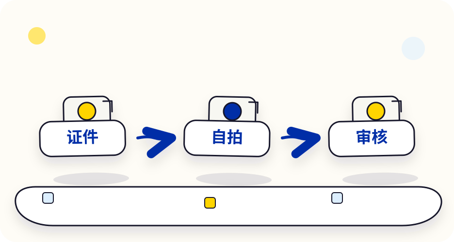
- 准备好有效证件（身份证或护照，以平台支持的为准），必须是本人的，年满 18 岁。
- 拍证件时光线充足、不反光、四个角完整入镜，别用截图或翻拍。
- 人脸识别时摘掉帽子和眼镜，按提示转头、眨眼。
- 填写的姓名、证件号、国家/地区要和证件一致。
- 审核一般几分钟到几天不等。被拒会提示原因，按提示重新提交即可。
不要用别人的身份认证，不要买卖实名账户，也不要帮别人认证。账户里的资金和行为都会算在证件主人头上。
注册完先熟悉这几个页面
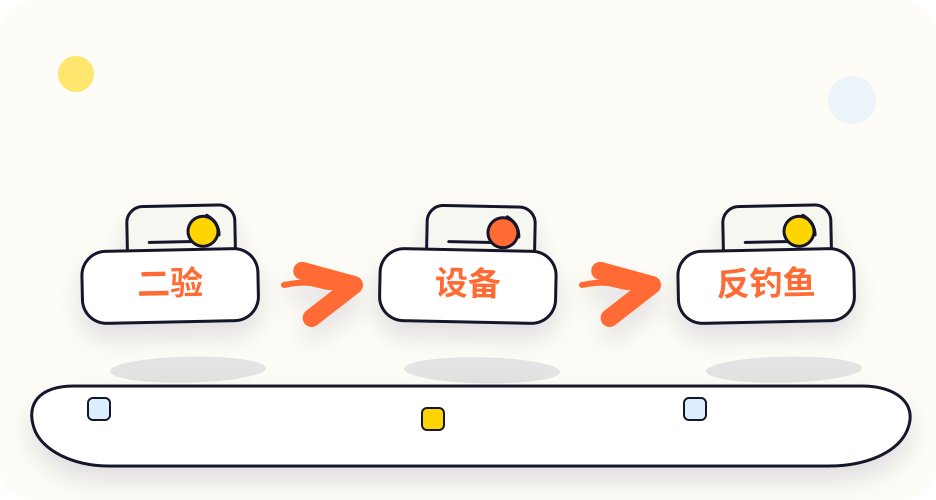
| 页面 | 在哪 | 用来干嘛 |
|---|---|---|
| 资产 / 钱包 | 底部导航“资产” | 看余额，充值、提币、划转都从这里开始 |
| 资金账户 vs 现货账户 | 资产页内 | P2P 买来的币通常在“资金账户”，要交易前可能需要“划转”到现货账户 |
| 交易 → 现货 | 底部导航“交易” | 买卖币。注意别误入“合约”标签页 |
| 安全中心 | 个人中心 → 安全 | 2FA、反钓鱼码、白名单、设备管理 |
| 在线客服 | 个人中心 → 帮助/客服 | 遇到问题只在这里找客服，不信私信 |
第一次买 U：入金、P2P 和防冻卡
“买 U”就是用钱换成 USDT。这一步是新手最容易出问题的地方，尤其是银行卡被冻结。请完整看完再操作。
- P2P 交易时，付款必须用与实名同名的账户，沟通和付款确认都在平台内完成。
- 没付款不点“已付款”；没收到钱不点“放币”。
- 冻卡风险无法完全避免，只能降低：选信誉高的商家、小额、保留记录。
买 U 的三种方式
P2P / C2C 交易
平台撮合你和个人商家：你转法币给商家，平台托管的 USDT 放给你。最常见，但有冻卡风险。
快捷买币 / 银行卡
部分地区支持用银行卡、第三方支付直接买，手续费通常更高，是否可用取决于你所在地区。
别人转给你
朋友直接转 USDT 到你的交易所地址或用平台内部转账。只接受你信任的人，避免陌生人。
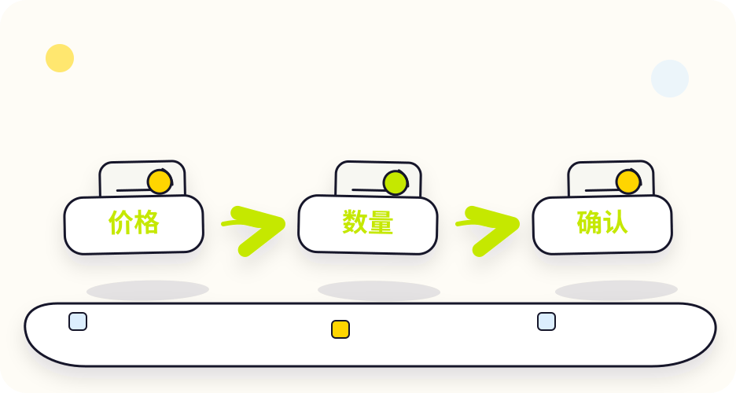
P2P 买 U 完整步骤
- 完成 KYC，绑定收付款方式（姓名必须和实名一致）。
- 进入 P2P / C2C 交易页，选择“购买 USDT”，选择你的法币和付款方式。
- 挑选商家：看成交单数、完成率（建议 95% 以上）、平均放币时间、是否有认证标识。价格明显比别人便宜很多的，要警惕。
- 下单：输入金额，确认价格。下单后平台会锁定商家的 USDT。
- 在限定时间内付款：用你自己的同名账户，按订单里显示的收款信息付款，金额一分不差。
- 付款完成后再点“我已付款”。等待商家确认收款并放币。
- 到账：USDT 进入“资金账户”。有问题不要私下解决，直接在订单页点“申诉”，由平台客服介入。
- 不要加商家的微信、QQ、Telegram 私下交易，脱离平台就没有托管保护。
- 不要用别人的卡、也不要让别人用他的卡帮你付款（第三方付款）。
- 不要没付款就点“我已付款”，这可能被封号。
- 卖 U 时，不要在没确认收到钱之前放币，不要相信“付款截图”。
- 不要接受“多付一点，让你退差价”这类要求。
- 不要一次买很大金额，第一次建议几十到几百元先熟悉流程。
- 不要把交易所账户、银行卡借给任何人使用。
什么是“冻卡”？为什么会发生？
你在 P2P 付款或收款时，对方的钱可能来自诈骗、赌博等违法资金（俗称“黑钱”）。警方追查这笔赃款时，会把资金流经的银行卡冻结，你即使不知情也可能被冻结。卖 U（收钱）的一方风险更高。
降低风险（只能降低，不能消除）的做法：
- 选择成交量大、完成率高、有平台认证的商家。
- 单笔金额不要太大，不要短时间内频繁收付款。
- 保留好订单记录、聊天记录、付款凭证，被冻结时用来证明你是正常交易。
- 收款尽量只用一张专门的卡，不要用工资卡、房贷卡。
再提醒一次：在中国大陆，法币与虚拟货币兑换属于被禁止的业务活动，相关交易不受法律保护（见风险与法规）。
买到 U 之后：怎么买 BTC 等其他币
在“交易 → 现货”里选择交易对，比如 BTC/USDT，意思是“用 USDT 买卖 BTC”。
市价单
按当前市场价立刻成交。简单、快，适合新手小额练习。成交价可能和你看到的略有差别。
限价单
你自己定一个价格，市场到了这个价才成交。不着急的时候可以用，可能一直不成交。
- 手续费：现货交易一般收 0.1% 左右（各平台、各等级不同，以页面为准）。
- 划转：P2P 买来的 USDT 常在“资金账户”，交易前先“划转”到“现货/交易账户”。
- 别点错：“合约”“杠杆”标签页和现货长得很像，下单前看清页面标题。
第一次买 U 计划表
充值、提币与转账：选对链，别转丢
链上转账发出去就撤不回来。只要记住“同币、同链、地址核对、小额测试”四件事，就能避开绝大多数事故。
- 充值是把币转进平台；提币是从平台转出去。本质都是链上转账。
- 收发两边：同一个币 + 同一条链。0x 开头的地址可能属于好几条链，更要选对。
- 同一平台用户之间优先用内部转账，通常免手续费、秒到。
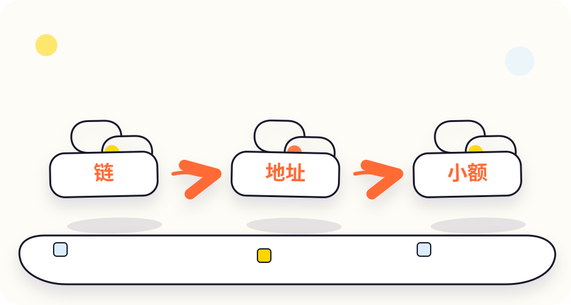
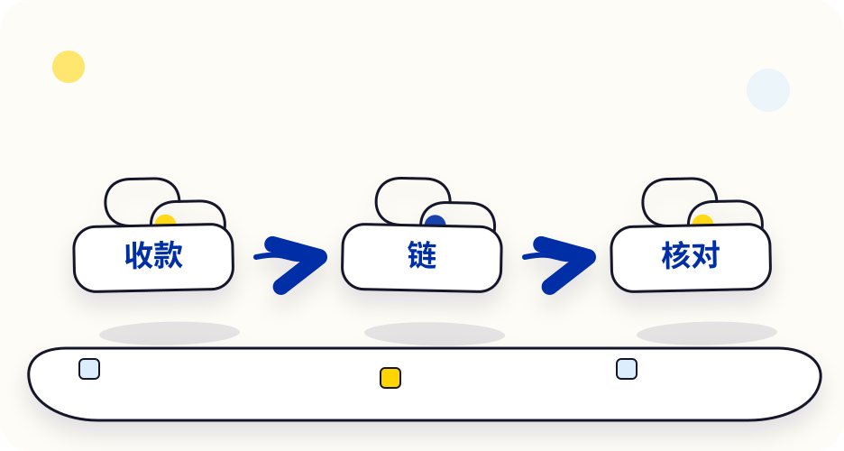
常见的链，一张表看懂
| 网络 | 常见叫法 | 手续费用什么付 | 地址长什么样 | 特点 |
|---|---|---|---|---|
| Ethereum | ERC20、以太坊 | ETH | 0x 开头，42 位 | 最通用，手续费通常较高 |
| TRON | TRC20、波场 | TRX（或能量） | T 开头，34 位 | USDT 转账很常用 |
| BNB Smart Chain | BEP20、BSC | BNB | 0x 开头，42 位 | 手续费通常较低 |
| Solana | SOL、SPL | SOL | 32–44 位字母数字，无 0x | 速度快，手续费低 |
| Arbitrum / Base / Optimism | 以太坊二层（L2） | ETH | 0x 开头，42 位 | 比以太坊主网便宜 |
| Bitcoin | BTC 主网 | BTC | 1、3 或 bc1 开头 | 只能转 BTC |
手续费会随网络拥堵和币价变化，以平台提币页面显示为准。
以太坊、BNB Chain、Arbitrum、Base 的地址格式一模一样，同一个钱包地址在这些链上都能用。所以你填对了地址、却选错了链，币可能到了对方不支持的网络上。交易所遇到这种情况可能需要人工找回、收手续费，也可能不支持找回。
提币标准流程（每次都照做）
- 在接收方打开“充值/收款”：选好币种和网络，复制地址。记下接收方支持的网络名称。
- 在发送方打开“提币”：选择同一个币，选择和接收方完全一致的网络。
- 粘贴地址，核对：开头 4–6 位、结尾 4–6 位、中间再随机看几位。不要手打，不要从历史记录里复制。
- 需要 Memo / Tag 的币一定要填（见下面）。
- 输入数量：注意页面显示的手续费和“实际到账数量”，以及最小提币额。
- 完成安全验证（邮箱、短信、2FA），提交。
- 第一次先转小额，在接收方确认到账后，再转剩下的。
- 复制 TxID 到区块浏览器查状态，到账记录截图保存。
Memo / Tag 是什么？
交易所为了省事，会让很多用户共用同一个充值地址，再用一个“备注号”区分是谁的钱。XRP、XLM、TON、ATOM、EOS 等币充值到交易所时常需要 Memo（也叫 Tag、备注、Destination Tag）。充值页面显示了 Memo，就必须填；漏填可能无法自动到账，只能提交工单申请找回。转到个人钱包通常不需要。
内部转账：同平台最省事
如果收发双方都在同一个交易所，可以用“内部转账 / 站内转账”，输入对方的 UID、邮箱或手机号即可，通常免手续费、即时到账、不上链。但同样要确认对方身份，转错人一样很难要回。
到账慢、转错了怎么办？
提币显示成功，但对方没到账
复制 TxID 到对应的区块浏览器查看：如果还在“确认中”，耐心等待；如果已成功但交易所没入账，带上 TxID 联系接收方平台客服。
选错了网络
如果接收方平台不支持该网络，立即带上 TxID 联系接收方客服询问能否找回，可能收费，也可能无法找回。不要相信网上自称能帮忙找回的“技术员”。
漏填了 Memo
联系接收方交易所客服，提交 TxID、充值地址、币种等信息申请人工找回，通常需要几天，可能收手续费。
转到了错误的地址
如果地址属于别人或骗子，基本无法追回。这也是为什么第一次必须小额测试。
常用区块浏览器
Web3 钱包：自己保管，自己负责
钱包让你真正掌控自己的币，也能使用各种链上应用。代价是：没有客服、没有找回密码，出错全靠自己。
- 助记词 = 钱包本身。手写离线保存，不截图、不存云、不发给任何人。
- 钱包里要留一点原生币（ETH、BNB、SOL、TRX）付手续费。
- 看不懂的授权和签名不要点；用不到的授权定期撤销。
币安钱包和 OKX 钱包都内置在各自交易所 App 中，也可以通过下面的链接进入。
钱包有哪几种？
| 类型 | 例子 | 优点 | 注意 |
|---|---|---|---|
| 交易所内置 Web3 钱包 | 币安钱包、OKX 钱包 | 和交易所账户打通，充提方便，适合新手 | 部分采用 MPC 方案，恢复方式以 App 说明为准 |
| 手机 / 浏览器插件钱包 | MetaMask、Trust Wallet、OKX 钱包插件 | 通用，支持各种 DApp | 助记词完全由你自己保管 |
| 硬件钱包（冷钱包） | Ledger、Trezor 等 | 私钥不联网，最安全 | 需要购买设备；只从官方渠道买，不买二手 |
助记词：最重要的 12 个单词
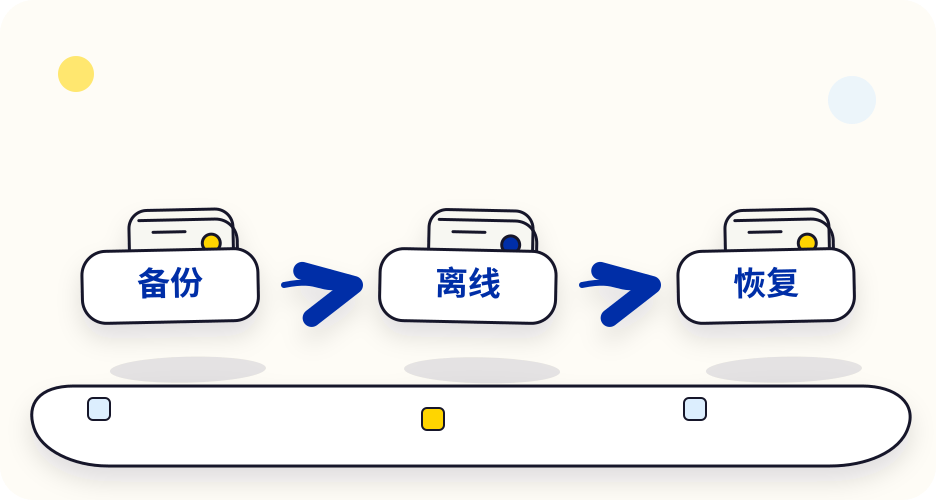
创建钱包时会给你 12 或 24 个英文单词，这就是助记词。用它可以在任何设备上恢复你的钱包——所以别人拿到它，也能在他的手机上“恢复”出你的钱包，把币转走。
✅ 正确做法
- 用纸笔按顺序抄写，核对一遍
- 抄两份，放在不同的安全地方
- 有条件的可以用金属助记词板防火防水
- 小额测试一次“删除钱包 → 用助记词恢复”
❌ 绝对不要
- 截图、拍照、存相册或网盘
- 复制到备忘录、微信收藏、邮件
- 输入到任何网站或“验证”页面
- 告诉任何人，包括“官方客服”
交易所内置的 MPC 钱包可能不显示传统助记词，而是用云端备份、恢复密码等方式。无论哪种形式，恢复凭证同样不能给任何人。
第一次用钱包：小额练习流程
- 从官方渠道安装钱包 App 或浏览器插件（或直接用交易所 App 里的 Web3 钱包）。
- 创建钱包，抄写助记词，按提示完成验证。设置一个开锁密码（这个密码只保护本机，不能代替助记词）。
- 复制收款地址：选好网络，比如 BNB Chain。
- 从交易所提一点原生币（如少量 BNB）到这个地址，用作手续费。
- 再提小额 USDT，同样的网络，到账后确认余额。
- 试着把一部分转回交易所，完整走一遍“出去—回来”。
新手最常见的问题：钱包里只有 USDT，没有付手续费用的原生币。在以太坊上转 USDT 要有 ETH，在 BNB Chain 上要有 BNB，在 TRON 上要有 TRX（或能量），在 Solana 上要有 SOL。
授权与签名：钱包被盗的头号原因
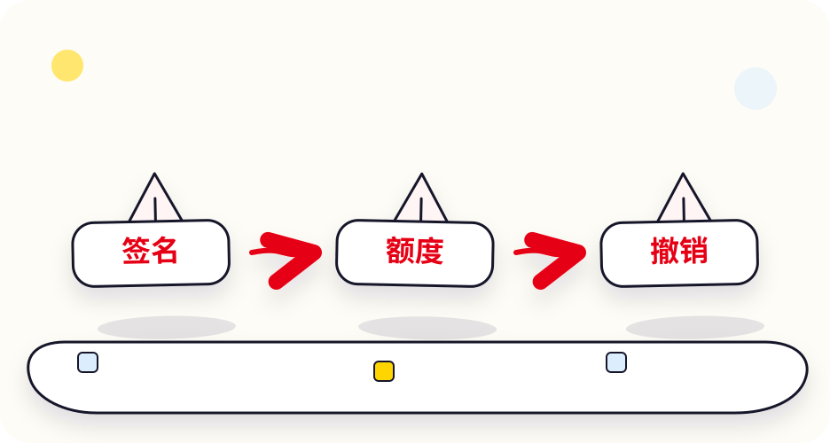
当你在去中心化交易所（DEX）兑换币时，钱包会先让你“授权”，允许这个合约动用你的某种币。很多网站默认申请无限额度。如果你授权给的是恶意合约，它可以随时把这种币全部转走。
- 只在你主动访问的官方网站上授权。网址从书签打开，不点群里、推特评论里的链接。
- 看清授权对象和额度。可以把额度改成本次需要的数量。
- 看不懂的签名不要点，尤其是写着 Permit、SetApprovalForAll、“离线签名”的请求。
- 定期检查和撤销授权：用钱包自带的“授权管理”，或 revoke.cash 这类工具（撤销本身也要付一点 Gas）。
- 钱包里突然多出来的陌生代币不要碰，不要去它提示的网站“兑换”，那往往是钓鱼诱饵。
进阶：用钱包兑换币（Swap）
- 认准合约地址：链上任何人都能发一个叫“USDT”的假币。兑换前从 CoinGecko、CoinMarketCap 或项目官网核对代币合约地址。
- 滑点：设置能接受的价格偏差，一般 0.5%–1% 足够；动不动要你设 10%+ 的，多半有问题。
- 分开放：长期存放的钱包和日常“玩”的钱包分开，玩的钱包只放小额。
U 卡：用 USDT 刷卡消费
U 卡是把加密资产和日常消费连接起来的银行卡类产品。它能不能用、划不划算，很大程度取决于你在哪、怎么用。
Bybit Card 可以直接点链接申请；Bitget Card 暂无直达链接，请在 Bitget App 的卡片页面申请时填写邀请码。
U 卡是什么？
U 卡通常是由交易所和持牌的发卡机构合作发行的 Visa 或 Mastercard 卡。你在卡账户里放 USDT 等资产，刷卡时按实时汇率换成当地货币付给商家。
- 虚拟卡：申请快，可绑定 Apple Pay / Google Pay（视地区）或用于网购订阅。
- 实体卡：可线下刷卡、ATM 取现，可能要邮寄和付工本费。
申请流程
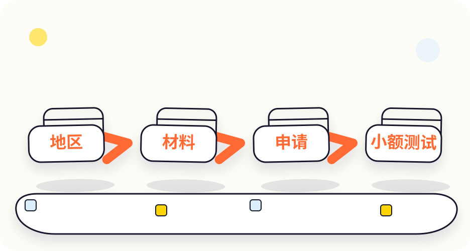
- 确认你所在地区是否支持：在 App 的卡片页面查看。不同国家开放情况差别很大，且会调整。
- 完成平台 KYC：部分地区需要额外的地址证明。
- 提交申请，填写邀请码，先申请虚拟卡。
- 划转少量资产到卡账户，绑定支付方式。
- 小额消费测试：看扣款金额、汇率、手续费、返现到账情况是否和说明一致。
申请前，把这张费用清单问清楚
| 费用 / 规则 | 要看什么 |
|---|---|
| 开卡费、工本费 | 虚拟卡和实体卡是否收费 |
| 年费 / 月费 | 是否有，是否有免年费条件 |
| 兑换费、充值费 | USDT 换成法币时收多少 |
| 外汇 / 跨境手续费 | 在国外或外币网站消费时额外收多少 |
| ATM 取现费 | 平台收费 + ATM 运营商收费 |
| 返现规则 | 返现比例、每月上限、是否需要持有平台币或达到 VIP 等级、返现发什么币 |
| 不支持的商户 | 部分类别（如博彩、部分订阅、某些国家商户）可能被拒付 |
U 卡的风险
- 政策变化：发卡机构、卡组织或当地监管变化，可能导致某地区停卡。历史上（2020 年）英国监管叫停 Wirecard 旗下发卡机构，多家加密卡一度无法使用。
- 不是银行存款：卡账户里的资产通常不受存款保险保护。
- 风控冻结：异常交易可能被拒付或冻结卡片。
- 税务与合规：部分地区用加密资产消费可能被视为“卖出”，涉及申报。
- 中国大陆用户：请先看风险与法规；能否申请以官方页面为准。
原则：卡里只放近期要花的钱，不要当储蓄账户用。
返现、手续费、地区支持等更细的对比可以看 U 卡对比百科（同一站长维护，数据以各卡官方页面为准）。
工具箱：查行情、查链上、做研究
工具帮你查资料、核对信息，不能替你做决定。任何工具上的观点、评分都要交叉验证，不能当买卖建议。
行情与币种信息
安全与链上
美股研究工具
- 在 CoinGecko / CoinMarketCap 搜索币名，进入详情页。
- 看“官网”“合约地址”，用这里的链接进入官网，不用搜索广告。
- 在钱包或 DEX 兑换时，核对代币合约地址和这里一致。
常见问题
新手问得最多的问题，都在这里。
完全小白应该先看哪一课？
想了解美股，先看“美股专区”的 4 种方式和平台对比；完全没接触过加密货币的，先看风险与法规、防骗、基础概念，再注册和操作。不要一上来就转账、开合约或申请卡。
入门需要多少钱？
学习阶段不需要钱。第一次实操建议用很小的金额（比如几十到几百元）走通注册、买 U、提币、转回的全流程，熟悉后再决定是否继续。只用闲钱。
买 U 和买 BTC 是一回事吗？
不是。买 U 是买 USDT 这种目标锚定美元的稳定币；BTC 是价格大幅波动的资产。一般先买 U，再用 U 去买其他币。
交易所账户是不是 Web3 钱包？
不是。交易所账户是平台替你保管；Web3 钱包是你自己用助记词 / 私钥保管。交易所 App 里内置的“Web3 钱包”属于后者，和交易所账户余额是分开的。
邀请码有什么用？注册完还能补填吗？
邀请码记录你是谁推荐来的，部分平台会给通过邀请注册的用户手续费返还或新人活动。多数平台只能在注册时填写，注册后通常不能补填。具体返现比例以平台活动页为准。
邀请码在哪里？
点页面顶部的“🎁 邀请码”，或看最后一课“邀请码汇总”。相关课程里也有对应平台的卡片，点“复制”即可。
可以只注册一家交易所吗？
可以。但很多人会注册两家互为备用，避免某一家临时维护、限制地区时没法操作。
KYC 一直不通过怎么办？
检查证件是否在有效期、照片是否清晰无反光、填写信息是否与证件一致。仍不通过就联系 App 内在线客服。不要找人“代认证”。
P2P 买 U 会不会冻卡？
有可能，这是 P2P 最大的风险。选信誉高的商家、小额、同名账户、全程平台内沟通、保留记录可以降低风险，但无法完全避免。详见第一次买 U。
转账选哪条链最好？
没有“最好”，只有“收发两边都支持”。先看接收方支持哪些网络，再在其中选手续费合适的。不确定就先小额测试。
币转错了能找回吗？
转错链、漏填 Memo 时，可以带 TxID 找接收方平台客服，有可能人工找回。转到错误的个人地址基本无法找回。网上声称能帮你追回的，基本是骗子。
助记词丢了怎么办？
如果钱包还在手机上能打开，立刻新建一个钱包并好好备份助记词，把资产转过去。如果钱包也打不开了，没有任何人能帮你恢复。
需要买硬件钱包吗？
刚入门、金额很小时不必。长期存放较大金额时可以考虑，一定从官方渠道购买，不买二手、不用别人帮你初始化的设备。
群里老师说某个币要涨 10 倍，能跟吗？
不能。免费带你赚钱的“老师”多半是在找人接盘。本站不推荐任何币种，也建议你不要相信任何喊单。
U 卡适合所有人吗？
不一定。U 卡强依赖地区、材料、费用和平台政策。先确认官方页面，卡里只放近期要花的钱。
代币化美股是不是投资建议？
不是。本站只解释产品形态和风险，不推荐任何股票，也不承诺收益。
赚了钱要交税吗？
多数国家和地区对加密资产买卖收益有纳税或申报要求，规则各不相同。请咨询当地税务专业人士。
闯关测验：10 道题检查你学会没
测验不是考试，是为了防止你真操作时出错。答错的题会告诉你回看哪一课。
题目加载中…
🎁 邀请码汇总
全部平台邀请码
8 个平台入口都在这里。点“复制”复制邀请码。每张卡片都标了链接域名的核对结果；交易所另外提供了官方主站入口，邀请码相同。
点“打开注册页”或“官方主站注册”
在注册页检查邀请码栏是否已填好
没填就点“复制”再粘贴进去
链接安全说明：这些链接是官方的吗？
很多交易所的推广链接不用主域名，而是用别的域名跳转，原因可能是部分地区打不开主站，也可能是第三方的跳转。我们只把能核实的写成“官方”。交易所的站长链接旁都配了同一邀请码的官方主站入口，可以任选。2026 年 11 月 8 日的核对结果：
| 平台 | 站长链接的域名 | 我们查到了什么 | 结论 |
|---|---|---|---|
| 币安钱包 | web3.binance.com | 币安主域名 binance.com 下的子域名 | ✅ 官方主域名 |
| OKX 钱包 | web3.okx.com | OKX 主域名 okx.com 下的子域名，页面显示该邀请码 | ✅ 官方主域名 |
| Bybit Card | www.bybit.com | Bybit 主域名 | ✅ 官方主域名 |
| Bybit 交易所 | www.bybitglobal.com | 2020 年注册，和 bybit.com 用的是同一家企业级域名注册商（CSC） | ℹ️ 站长推广链接 |
| Bitget 交易所 | www.bitget.org | 2018 年注册，有正规证书；也可以用 bitget.com 官方主站注册 | ℹ️ 站长推广链接 |
| 币安交易所 | www.bsmkweb.cc | 打开后会自动跳转；也可以用 binance.com 官方主站注册 | ℹ️ 站长推广链接 |
| OKX 交易所 | www.tzbflgjyscw.org | 打开后会自动跳转，最终页面加载 OKX 的资源；也可以用 www.okx.com 官方主站注册 | ℹ️ 站长推广链接 |
邀请码本身我们也核对了：在 OKX 官方主站打开 okx.com/join/3604739，页面显示“个人邀请”和邀请人信息；Bybit 主站同码页面显示“您的好友邀请您加入 Bybit”；Bitget 主站同码链接会自动填入邀请码；币安主站页面没有显示邀请人，我们无法独立确认，但邀请码与站长原来提供的一致。
能打开官方主站的，优先点卡片上的“官方主站注册”，邀请码一样；打不开主站时再用站长链接，打开后先用下面的方法核对域名，再输入任何账号信息。
关于链接和邀请关系的常见问题
这些链接安全吗？
标“官方主域名”的在交易所自己的域名下；交易所的“站长链接”是站长的推广链接。想更稳妥，可以点卡片上的“官方主站注册”（邀请码相同），或用下面的方法自己核对域名。
怎么自己核对一个域名是不是官方的？
① 用交易所的官方验证工具：币安有 Binance Verify，可以查网址、邮箱、电话、社交账号；OKX 在 App 里“个人中心 → 帮助 → 官方渠道验证”（说明）；Bitget 有官方验证工具；Bybit 有 Authenticity Check。② 看浏览器地址栏的完整域名，不看页面长相。③ 注册后只用官方 App 登录，不再从任何链接登录。
“邀请关系”是什么意思？
你用某人的邀请码注册，就成为他在这个平台上的被邀请人。平台按自己的规则，把你产生的一部分手续费作为返佣给邀请人，有时也会给你新人奖励或手续费折扣。本站所有邀请码都是站长自己的，你通过它们注册，站长可能获得返佣。
邀请人能看到我的什么信息？
一般只能看到平台提供的有限统计，比如是否完成注册、返佣金额，通常是打码的账号。看不到你的密码、私钥或完整资产明细。具体以各平台规则为准。
用邀请码会让我多付钱吗？
不会。返佣来自平台给邀请人的分成，不会额外向你收费。部分平台还会给被邀请人手续费折扣或新人奖励，以活动页为准。
可以不用邀请码吗？
可以。直接去官网注册、邀请码栏留空就行，不影响你使用任何功能。用不用完全由你决定。
用“官方主站注册”会影响返现吗？
两个入口用的是同一个邀请码，邀请关系按邀请码计算。返现比例、活动内容以平台页面为准。
分享给朋友
帮刚入门的朋友少走弯路：先让他们看完风险和防骗两课再操作。